01 / ACCESSIBILITY
UIR Access
Digital accessibility considered from the first conversation through to the finished experience.
Explore UIR Access
ÚIR CONSULTING · COUNTY ARMAGH
Accessibility, thoughtful design and practical technology — considered from the very beginning.
Explore our workRooted in place. Made for people.
The best digital experiences are shaped around people from the outset — not adjusted as an afterthought.
Úir is an Old Irish word for earth, soil and fresh ground. It also speaks to orchard. Here in County Armagh, where our business is rooted in a former orchard, the name brings our place and our purpose together: build with care, from the ground up.
Why accessibility comes firstOne grounded approach, across inclusive digital services, physical making and the products people use every day.
01 / ACCESSIBILITY
Digital accessibility considered from the first conversation through to the finished experience.
Explore UIR Access02 / 3D & MAKING
3D modelling and print management, connecting digital ideas with considered physical results.
Explore UIR Form03 / DESIGN & DEVELOPMENT
Apps and websites designed and built with clarity, care and the people using them in mind.
Explore UIR StudioWhether we’re improving accessibility, shaping a 3D model or designing a website, we start by understanding the people and the purpose. Then we make the work clear, useful and ready to grow.
See how we bring ideas to lifeA GOOD PLACE TO START
We’d be glad to hear what you’re working on. Contact details can be added here when you’re ready to share them.